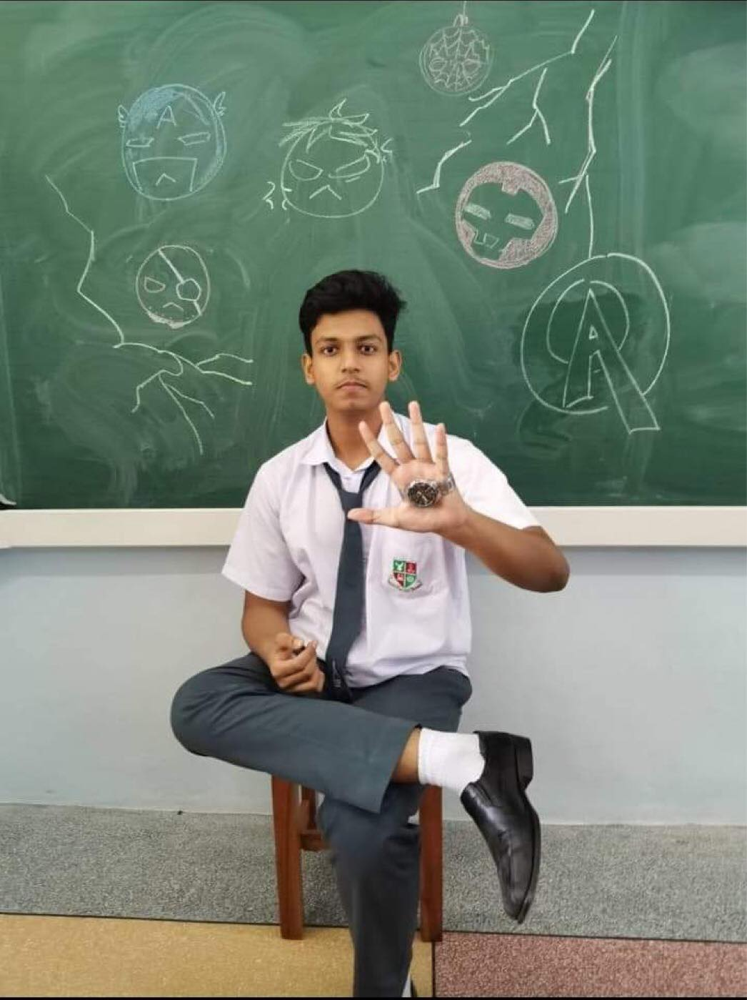
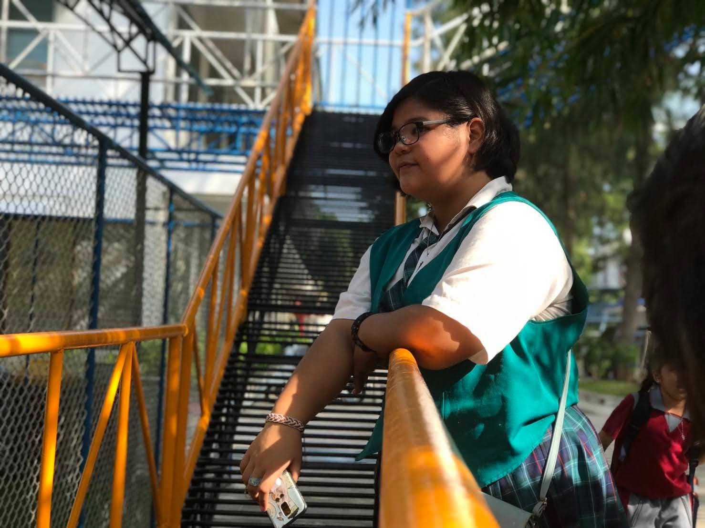
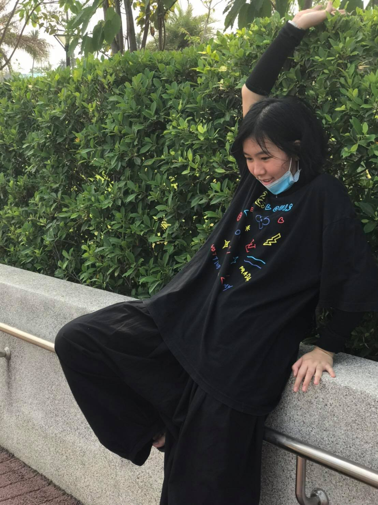
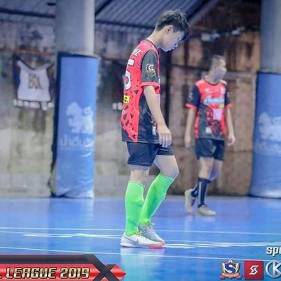
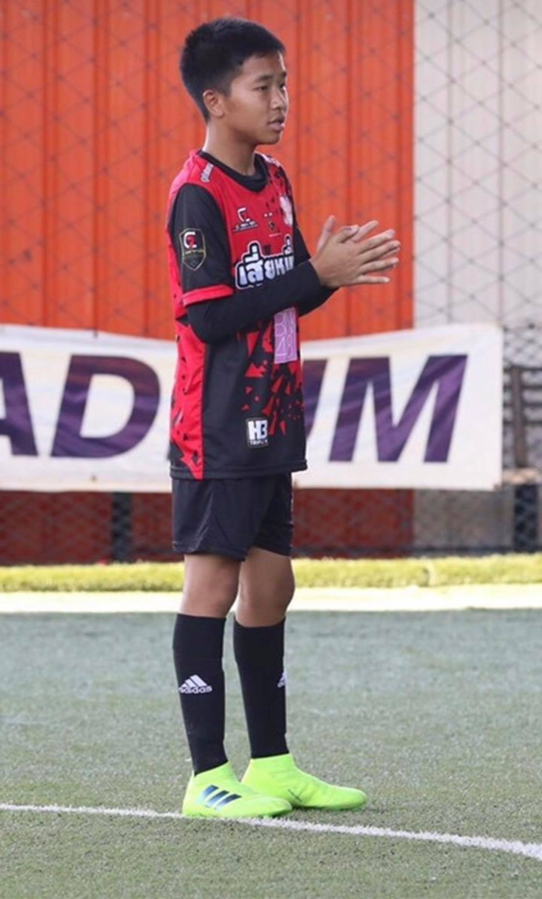
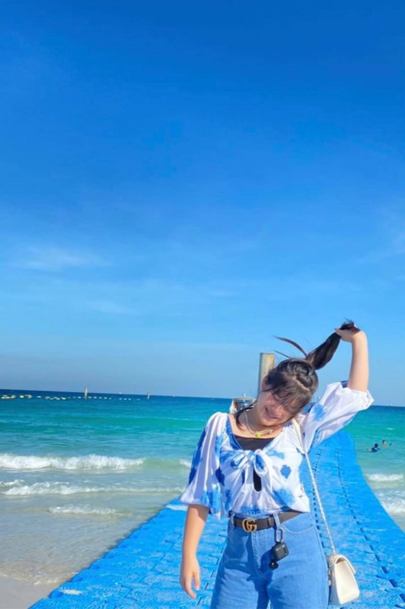
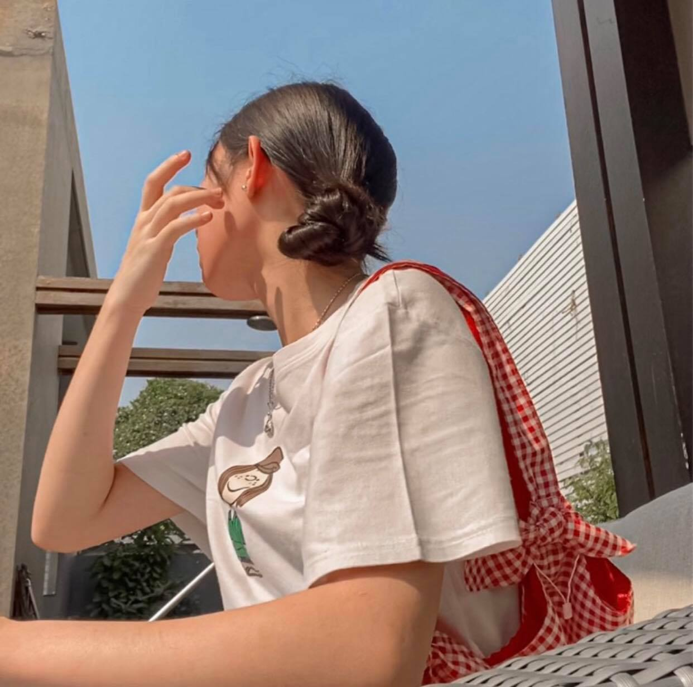
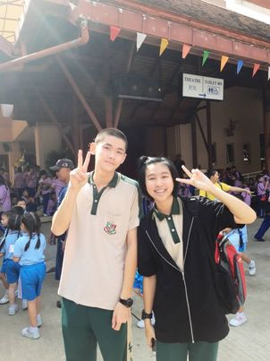

PHOTOGRAPHER
Min Ji
Welcome to MinJi's memories! Hope you enjoy looking at the pics and don't forget to click the icons below :D. When you press the YouTube icon,
I recommmend you to turn your volume up as high as possible! Thank you so much!🖤







